Sculpting terrain
Raise hills, cut cliffs, carve valleys, stamp mountains and weather the result — every sculpting tool, button, slider and shortcut in the terrain editor, mapped to the Roblox Terrain Editor you already know.
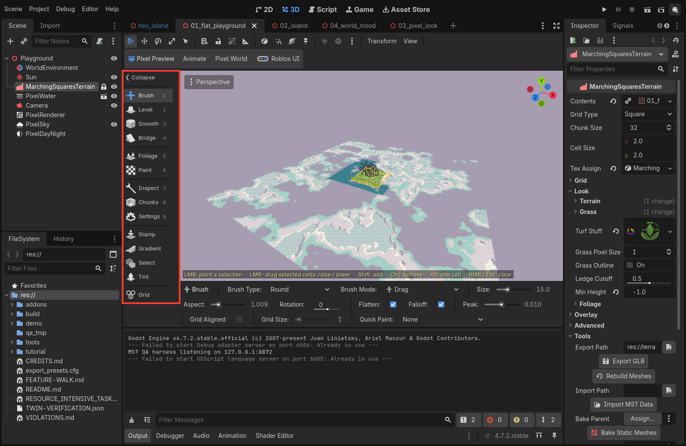
MarchingSquaresTerrain node. Its settings strip sits under the view.What you'll learn
- The three sculpting surfaces: left toolbar, bottom attribute strip and hint bar.
- How each Roblox Terrain Editor tool (Add, Subtract, Grow, Erode, Smooth, Flatten, Paint) maps to MST.
- Brush shape, size, aspect and rotation, and the mouse-wheel shortcuts.
- Every tool in detail: Brush (Raise / Lower and Drag), Level, Smooth, Bridge, Stamp, Gradient, Select, Inspect and Tint.
- Square vs hex grids and the Grid overlay.
- Six recipes: hill, cliff / plateau, river valley, terraces, ramp, crater.
- Erosion: weathering a whole landscape in one click.
- Undo and redo, plus a filterable reference of every control.
A few Godot words first
- Node
- One object in your scene, like an Instance in Roblox. The terrain is a node called
MarchingSquaresTerrain. - Scene dock
- The panel at the top left listing every node, like Roblox's Explorer. A dock is any panel you can move around the editor.
- Inspector
- The panel on the right showing the selected node's properties, like Roblox's Properties window.
- 3D view (viewport)
- The big picture of your world in the middle. You sculpt directly in it.
- Output panel
- The text log under the 3D view, like Roblox's Output window. The Inspect tool prints here.
.tscn/res://- A
.tscnfile is a saved scene, like a Roblox place file.res://means "the project folder". - Cell
- MST terrain is a grid of cells, each with its own height. You sculpt by changing those heights, not by adding blobs of voxels.
- LMB / RMB / MMB
- Left, right and middle mouse button. "Wheel" means the scroll wheel.
Your follow-along scene
Everything on this page can be tried on a flat practice terrain made for this guide: res://tutorial/guide/sculpt_playground.tscn. In the FileSystem dock (bottom left) open tutorial → guide and double-click sculpt_playground.tscn. It's a flat 3×3-chunk terrain on a Square grid, with water, sky, day/night, the pixel look and an orbit camera already set up. The green chunk in the middle is your main play surface; the chunks around it sit at or under the water line.
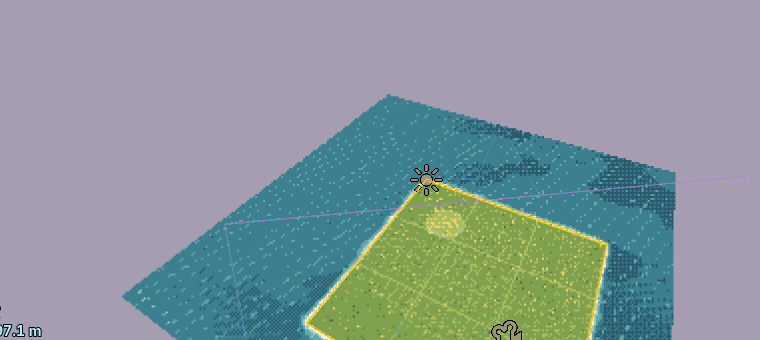
Relief reads best from a low, three-quarter angle zoomed in on the patch you're working on. Straight from above, even big hills look flat. Hold RMB in the view and use WASD to fly, just like Roblox Studio's camera.
The three sculpting surfaces
Click MarchingSquaresTerrain in the Scene dock. Three things appear:
- The left toolbar — a vertical bar of tool buttons inside the 3D view. It is only there while a terrain node is selected. The pressed (blue) button is the current tool.
- The bottom attribute strip — a wrapping row of controls under the 3D view. Its contents change with the tool. Its title (far left) names the tool.
- The hint bar — one translucent line at the bottom left of the 3D view summing up the current tool's mouse and key actions.
Toolbar tour
Click the numbered dots to learn each button. Tools 1–9 have a number-key shortcut; the four tools under the third divider (Stamp, Gradient, Select, Tint) don't.
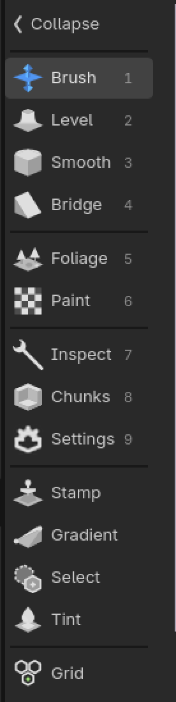
Hover any button in the editor to read its full tooltip. Picking a tool highlights its button, changes the strip title and the hint, and clears any active selection or paste.
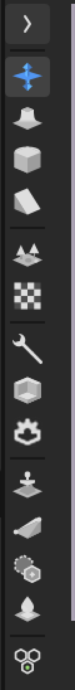
On a short editor window the toolbar is taller than the 3D view, so the last buttons (Tint, Grid) hide behind a scrollbar. Scroll the bar, make the window taller, close the Output panel, or click Collapse to make it fit.
The attribute strip and hint bar
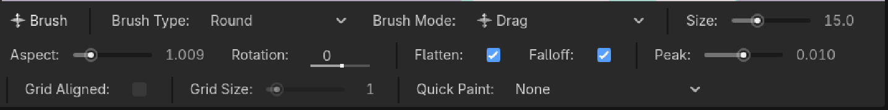
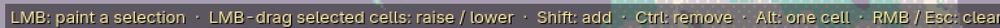
The strip reflows when a value's text gets wider (Peak 0.010 vs -1.000, for example), so controls to its right can shift sideways. Not a bug — just re-find the control after changing its neighbour.
In Studio, the Terrain Editor is a separate window with tool tabs and a settings panel. Here the toolbar is those tabs, the strip is that settings panel, and both live inside the 3D view. They disappear when you click a different node — click the terrain again to bring them back.
From the Roblox Terrain Editor to MST
Roblox terrain is made of voxels you add and remove like clay. MST terrain is a grid of cells with heights — you push cells up and down. So the jobs are the same but split across differently named tools:
| Roblox tool | MST equivalent | Notes |
|---|---|---|
| Add | Brush → Raise / Lower, hold LMB | Raises toward a Ceiling height. For big shapes in one click use Stamp. |
| Subtract | Brush → Raise / Lower, hold RMB | Lowers toward a Floor height. Or Stamp with a negative Height. |
| Grow | Raise / Lower LMB, or Stamp Add / Max | No voxel "grow sphere" — there's no blob to grow, only cell heights. |
| Erode | Raise / Lower RMB, Smooth, or the Erosion node | MST's Erosion is a whole-terrain rain simulation, not a brush. |
| Smooth | Smooth (key 3) | Extra choice: Terraced or Sloped. |
| Flatten | Level (key 2), or LMB+RMB in Raise / Lower | Flattens to a typed or picked Height. |
| Paint | Paint (key 6) | See Painting, textures & tint. |
| Region Select / Copy / Paste | Select | C copy, V paste, Z/X rotate, M mirror. |
| Import heightmap | Stamp with an image | Drop PNG/JPG/WEBP/EXR files in addons/MarchingSquaresTerrain/stamps/. |
| Brush Size / Strength | Size (Shift+wheel) / Strength (Ctrl+wheel) | Strength exists on Raise / Lower, Smooth and Gradient. |
Two MST tools have no Terrain Editor parallel. Brush → Drag works like selecting Parts and moving them with the Move tool: you first paint a selection of cells, then drag them all up or down as one. Bridge / Gradient build perfectly straight ramps — something you'd fake in Roblox with a rotated wedge Part.
Guided tutorial: your first sculpt
About 15 minutes on the sculpt playground. You'll raise a hill, carve a pit, flatten a shelf, lift a plateau and undo it all.
- Open the playground. FileSystem →
tutorial/guide/sculpt_playground.tscn, double-click. Make sure the 3D tab at the top centre is active. - Select the terrain. Click
MarchingSquaresTerrainin the Scene dock. The toolbar, strip and hint bar appear. Brush is already pressed. - Frame the camera. Fly in so the green chunk fills the view at a low angle.
- Switch to Raise / Lower. In the strip, open Brush Mode and pick Raise / Lower. Ceiling, Height, Floor and Strength appear.
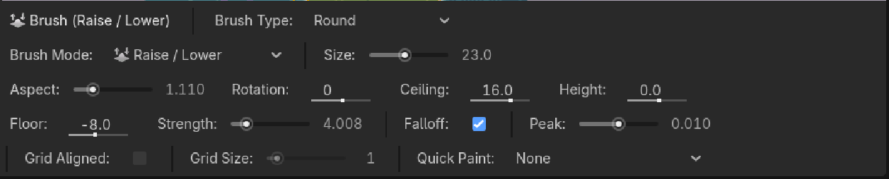
The Raise / Lower strip. - Raise a hill. Hover the ground — a round outline follows the cursor. Hold LMB and move a little. The ground rises. Let go when you like it.
Holding LMB raises a hill toward Ceiling. - Dig a pit. Move aside and hold RMB. The ground sinks toward Floor.
- Resize the brush. Hold Shift and roll the wheel; watch Size change.
- Flatten a shelf. Press 2 for Level. Type
6in Height, untick Falloff, and LMB-drag a patch. A flat shelf appears. - Lift a plateau. Press 1, set Brush Mode back to Drag. LMB-drag over some ground — the cells turn white. Then LMB-drag starting on a white cell and move the mouse up: the whole selection rises as one flat block. Right-click to clear the selection.
- Undo everything. Press Ctrl+Z once per stroke. Ctrl+Shift+Z brings a stroke back.
- Save with Ctrl+S if you want to keep your work.
Brush shape, size, aspect and rotation
Most tools share the same brush controls at the start of the strip. Learn them once.
Brush Type
A dropdown: Round (default), Square, Hexagon, Hexagon30 (hexagon turned 30°), Triangle and Triangle180 (triangle flipped). The outline under the cursor changes to match. Slide to compare:
Size
The brush diameter in world units. Range 1–50 (the maximum grows with your terrain's cell size), step 0.5, default 15. Drag the slider or hold Shift and roll the wheel.
Aspect
Stretches the brush into an ellipse or rectangle: Z radius ÷ X radius. Range 0.2–5.0, step 0.05, default 1.0 (round).
These stills use the Square brush, so its footprint stretches into a rectangle; with Round it becomes an ellipse. Handy for ridges, river banks and long walls.
Rotation
Turns the brush, in degrees: −180 to 180, step 1, default 0. Type it, drag the spin box, or hold Alt and roll the wheel (15° per notch). It matters for non-round shapes.
Strength (Ctrl+wheel)
How hard the tool pushes. Only Brush (Raise / Lower), Smooth and Gradient have a Strength slider; on Stamp, Ctrl+wheel changes the stamp's Height instead. Level has no Strength, and its hint stops at "Shift+wheel: size".
Roblox has Size and Strength sliders in the Terrain Editor panel. Here they're the same idea, plus wheel shortcuts so you never leave the 3D view: Shift = size, Ctrl = strength, Alt = rotation.
Falloff and Peak
Falloff (checkbox, on by default) weakens the brush toward its edge, giving soft rounded shapes. Off, the brush acts evenly right to the edge — flat-topped and abrupt.
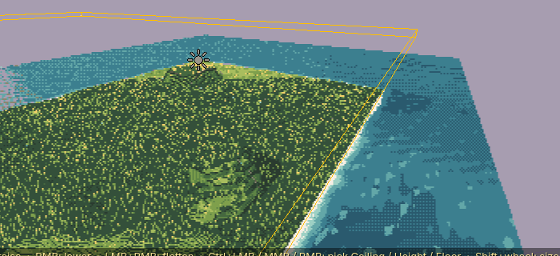
Peak (slider −1 to 1, step 0.05, default 0.010) is the falloff's contrast: above 0 makes pointy peaks, below 0 flat-topped mesas. It only does something while Falloff is on.
The three stills above are one stroke each at the same Strength: −1 spreads the top into a mesa, +1 pinches it into a spike. Stack strokes to exaggerate it further.
Grid Aligned, Grid Size and Quick Paint
- Grid Aligned (checkbox, off) snaps the brush to whole cells. It only works on a Triangle, Hexagon or Hex Rings grid and with Falloff off; otherwise it's greyed out with the tooltip "Grid Aligned needs a Triangle/Hexagon/Hex Rings grid and Falloff off." On the Square-grid playground it's always grey.
- Grid Size (slider 0–20, default 1) — the size of the grid-aligned stamp, in cells.
- Quick Paint (dropdown) paints a texture while you sculpt: None (default), Full Void (slot 15 on ground and wall, no grass), Base Grass Masked (slot 0), or Selected Material (whatever slot is chosen in the Paint tool). Handy for roughing in cliffs that should be rock as you raise them. Texture slots are explained on the Painting page.
The tools, one by one
Pick a tab. Each one covers the tool's controls, mouse actions and a clip.
The everyday sculpting brush. Choose it with Brush Mode → Raise / Lower. The dropdown has just two entries: Drag and Raise / Lower.
Hint: Hold LMB: raise · RMB: lower · LMB+RMB: flatten · Ctrl+LMB / MMB / RMB: pick Ceiling / Height / Floor · Shift+wheel: size · Ctrl+wheel: strength
| Action | Result |
|---|---|
| Hold LMB | Raise, never above Ceiling. |
| Hold RMB | Lower, never below Floor. |
| Hold LMB + RMB | Flatten toward Height. |
| Ctrl+LMB | Pick Ceiling from the hovered cell. |
| MMB | Pick Height from the hovered cell. |
| Ctrl+RMB | Pick Floor from the hovered cell. |
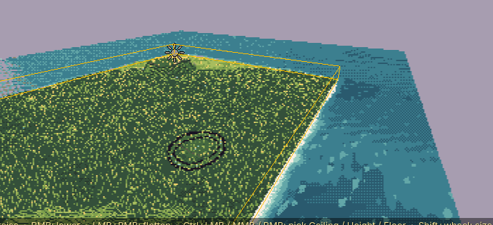
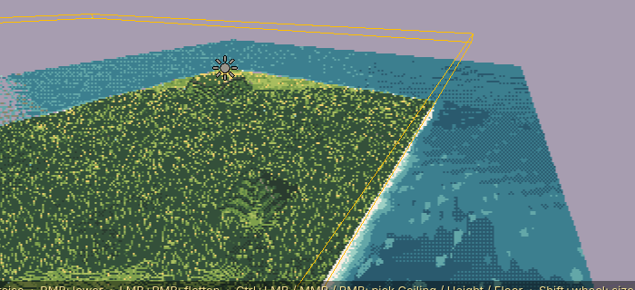
Strip controls: Brush Type, Brush Mode, Size, Aspect, Rotation, Ceiling (−50…50, default 16), Height (−50…50, default 0), Floor (−50…50, default −8), Strength (0.25–30, step 0.25, default 4), Falloff, Peak, Grid Aligned, Grid Size, Quick Paint.
Strength is a rate, not a target, so this brush is gentle. Want a dramatic mountain in one go? Use Stamp.
Two steps: paint a selection of cells (they turn white), then drag the whole selection up or down together.
Hint: LMB: paint a selection · LMB-drag selected cells: raise / lower · Shift: add · Ctrl: remove · Alt: one cell · RMB / Esc: clear
| Action | Result |
|---|---|
| LMB-drag off the selection | Start a new selection. |
| Shift+LMB-drag | Add cells to the selection. |
| Ctrl+LMB-drag | Remove cells from the selection. |
| LMB-drag starting on a white cell | Move every selected cell up / down together (mouse up/down). One undo step. Snaps to terrace steps on Terraces / HexPrism looks; hold Ctrl to move freely. |
| Alt+LMB-drag | Move only the hovered cell (strip shows "1 selected"). |
| RMB (or Esc) | Clear the selection. |
Flatten (checkbox, on) flattens the dragged selection to the clicked height, so it rises as a flat-topped plateau.
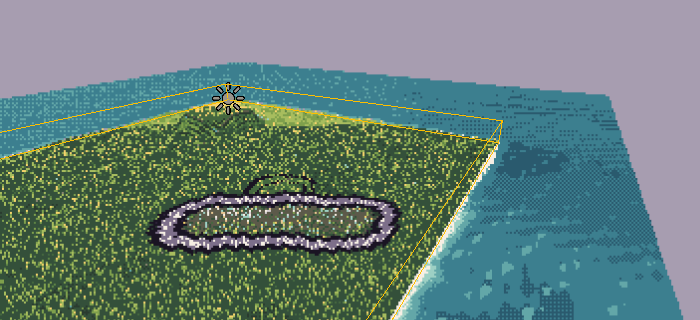
RMB is the reliable way to clear. Esc does the same from the keyboard (the hint bar lists it as "RMB / Esc: clear").
Flattens what you drag over toward the Height value: lower ground rises, higher ground is cut down. The result is a flat shelf. Ctrl+LMB sets Height from the hovered cell. Falloff softens the edges; turn it off for sharp sides.
Hint ends at … Shift+wheel: size — Level has no Strength, so Ctrl+wheel just zooms the camera here, like an ordinary wheel.
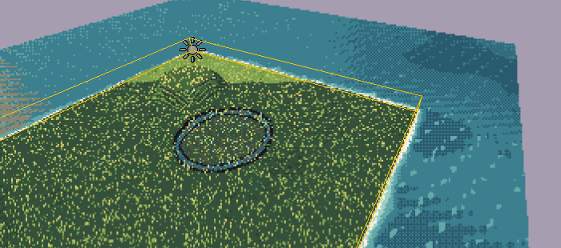
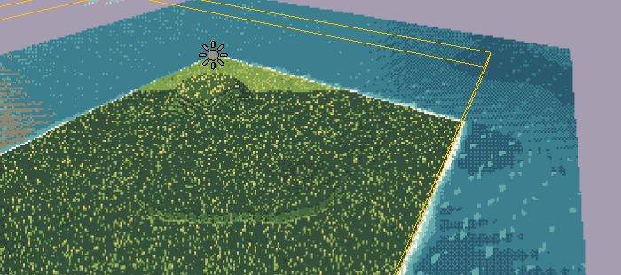
Strip: Brush Type, Size, Aspect, Rotation, Height, Falloff, Peak, Grid Aligned, Grid Size, Quick Paint.
Relaxes cells toward the average height of their neighbours, rounding off bumps and pits. Hint ends … Ctrl+wheel: strength.
- Smooth Mode — Terraced (default): smoothed cells stay flat steps. Sloped: smoothed cells become slanted ramps between neighbours, like Bridge. On a Square grid both look the same (square grids always ramp); the difference shows on hex / triangle grids.
- Strength — slider 0.0255–0.3005, step 0.0055, default ≈ 0.15.
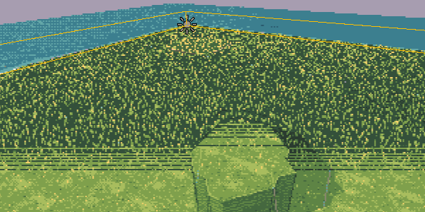
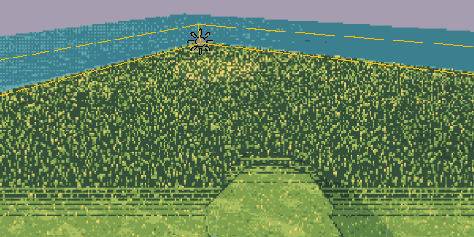
Two passes of Smooth at full Strength took the sharp mound on the left to the rounded swell on the right. The effect is gentler on small bumps:
Strip: Smooth Mode, Brush Type, Size, Aspect, Rotation, Strength, Grid Aligned, Grid Size, Quick Paint.
LMB-drag from a start point to an end point. The ground between is pulled onto a straight line joining their heights — a ramp or causeway. Shift+wheel sets its width (hint: Shift+wheel: width).
Ease Value (−5…5, step 0.1, default −1) bends the ramp's height curve using Godot's ease(): 1 = linear, 2 = ease-in, 0.5 = ease-out, < 0 = in-out, −1 = no easing.
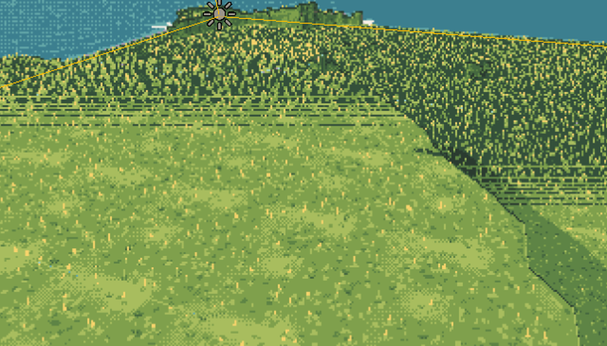
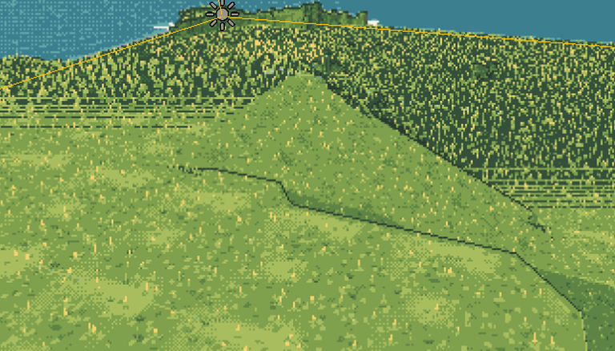
The compare shows the job plainly: the flat foreground and the ridge are now joined by one straight ramp, with the dropped sides falling away from it. Strip: Brush Type, Size, Ease Value, Grid Aligned, Grid Size, Quick Paint.
Drops a whole prebuilt shape in one click. A live wireframe preview follows the cursor.
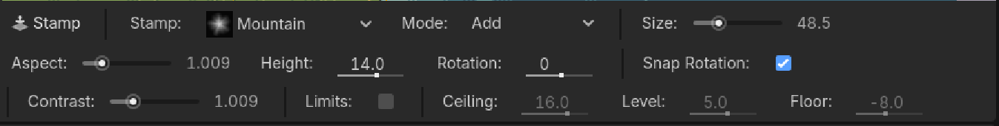
| Action | Result |
|---|---|
| LMB | Stamp at the cursor. |
| LMB-drag | Pin the centre, drag out size and rotation. |
| Shift / Ctrl / Alt + wheel | Size / Height / rotation. |
| Z / X | Rotate. |
The five built-in shapes:
Mode decides how the stamp combines with the ground:
| Add | Raise by the stamp (default). |
| Max | Only raise toward the stamp. |
| Min | Only lower toward the stamp. |
| Replace | Set the area to the stamp. |
| Lift / Carve | Add / remove height × stamp value (sculpting modes). |
| Level | Pull toward the Level height. |
| Broad | Build landmass from Level up by Height — only ever raises. |
Negative Height carves — the quickest way to make pits and valleys. Limits (off by default) clamps every mode between Ceiling and Floor and makes Level / Broad use the Level value; with Limits off, Level / Broad level at the clicked height.
Your own stamps: drop a greyscale PNG, JPG, WEBP or EXR into addons/MarchingSquaresTerrain/stamps/ and it appears in the Stamp dropdown. The white parts reach the stamp's Height.
Like Bridge, but you paint the ramp with the brush, so you control exactly where it applies. Pick the two ends first:
- Ctrl+LMB on the start point (takes its position and height).
- Ctrl+RMB on the end point.
- LMB-drag over the ground: it's pulled toward the straight ramp between them.
Hint: Ctrl+LMB: start point · Ctrl+RMB: end point · LMB-drag: paint the ramp … Ctrl+wheel: strength
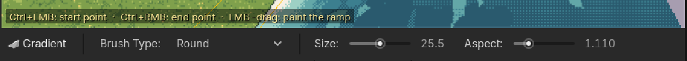
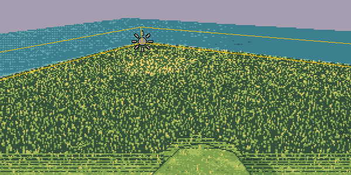
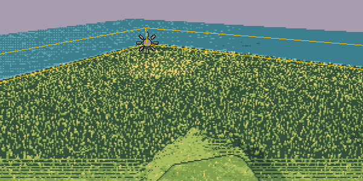
Picked from a cell on the mound's top to one at its foot, the stroke replaced the hard break with a single even ramp. Switch to another tool (or click away) to hide the dotted start–end guide line before inspecting the result.
Strip: Brush Type, Size, Aspect, Rotation, Strength (0.0055–1.0, default 0.30), Falloff, Peak.
Copies a patch of ground — height, textures and grass — and pastes it elsewhere.
- LMB-drag to select cells. Alt or Esc clears.
- C copies. The hovered cell is the anchor.
- V (or the Paste button) enters paste mode — a ghost follows the cursor.
- Z / X rotate, M mirrors.
- LMB drops a copy (one undo step). RMB or Esc leaves paste mode.
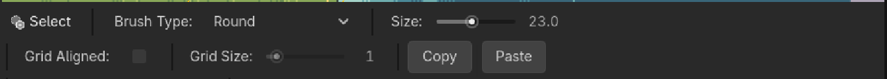
- Copy / Paste — buttons, same as C / V.
- Paste Rotation — −360…360, default 0 (60° steps on hex, 90° on square).
- Mirror — checkbox, same as M.
- Relative Height — on by default: heights are pasted relative to the target cell. Off: the copied absolute heights.
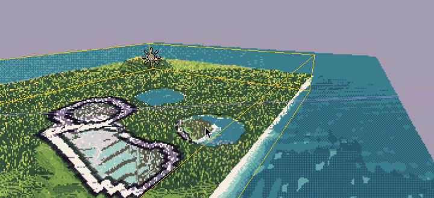
LMB a cell to print its data to the Output panel: global position, sample / chunk / local coordinates, height, floor and wall texture (slot + name), grass, and smooth flag. Useful to read an exact height before typing it into Level or Ceiling. Strip: Brush Type and Size only.
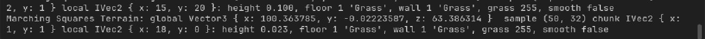
Paints a colour over whole cells — territory, biome hints, paths. It's saved with the terrain and shows in game. LMB paints the Tint colour (Red, Orange, Yellow, Green, Teal, Blue, Purple, Pink, White, Black) at Opacity (0.05–1, default 0.5); RMB erases; Shift+wheel = size.
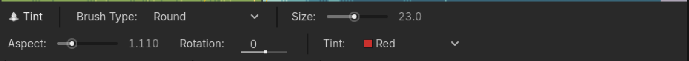
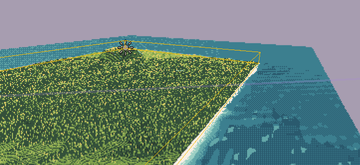
Full details live on Painting, textures & tint.
Stamp is like dragging a prebuilt terrain blob in from the Toolbox; Select is like Ctrl+C / Ctrl+V on a group of Parts — but for a patch of ground, grass and textures included.
Square vs hex grids, and the Grid overlay
The Grid button at the bottom of the toolbar toggles white cell lines on the terrain (the terrain's show_grid_in_editor setting). It's the quickest way to see what a "cell" is.
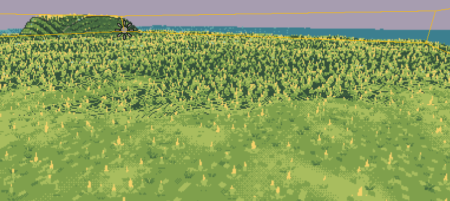
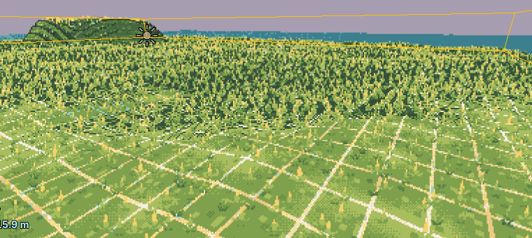
The grid type (set in the terrain's Inspector) changes how some tools behave:
| Square (sculpt playground) | Hex Rings (demo/hex_island) | |
|---|---|---|
| Overlay | Squares | Hexagons |
| Grid Aligned | Greyed out | Available (with Falloff off) |
| Rotation snap | 15° / 90° | 60° |
| Smooth Terraced vs Sloped | Look the same | Visibly different |
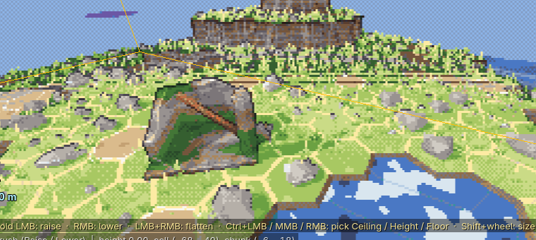
demo/hex_island.tscn. Select the terrain, press Grid and zoom in on a flat patch to see the hexes.Grid types themselves are covered on Chunks, settings & saving.
Control reference
Every sculpting control. Type to filter (try "wheel", "Stamp" or "Ceiling").
Collapse
Show / hide the tool names (icons only). Remembered per project.
Grid
Toggle the cell-line overlay (show_grid_in_editor).
Tool number keys
Switch to Brush, Level, Smooth, Bridge, Foliage, Paint, Inspect, Chunks, Settings. Stamp / Gradient / Select / Tint have no key.
- Shortcut
- 1–9
Brush Type
Brush shape.
- Values
- Round, Square, Hexagon, Hexagon30, Triangle, Triangle180
- Default
- Round
Brush Mode
Drag: paint a selection, then drag it. Raise / Lower: hold LMB / RMB to sculpt.
- Values
- Drag, Raise / Lower
- Default
- Drag
Size
Brush diameter in world units.
- Range
- 1 – 50 (scales with cell size), step 0.5
- Default
- 15
- Shortcut
- Shift+wheel
Aspect
Brush Z radius ÷ X radius (ellipse / rectangle).
- Range
- 0.2 – 5.0, step 0.05
- Default
- 1.0
Rotation
Brush rotation in degrees.
- Range
- −180 – 180, step 1
- Default
- 0
- Shortcut
- Alt+wheel (15°)
Flatten
Flatten the dragged selection to the clicked height.
- Default
- On
Falloff
Weaken the brush towards its edge.
- Default
- On
Peak
Falloff contrast: > 0 pointy peaks, < 0 flat-topped mesas.
- Range
- −1 – 1, step 0.05
- Default
- 0.010
Grid Aligned
Snap the brush to whole cells. Needs a Triangle / Hexagon / Hex Rings grid and Falloff off; greyed otherwise.
- Default
- Off
Grid Size
Size of the grid-aligned stamp in cells.
- Range
- 0 – 20, step 1
- Default
- 1
Quick Paint
Paint a texture while sculpting.
- Values
- None, Full Void, Base Grass Masked, Selected Material
- Default
- None
Ceiling
Raise never goes above this height.
- Range
- −50 – 50, step 0.1
- Default
- 16.0
- Pick
- Ctrl+LMB
Height (Raise / Lower) · Level (Stamp)
Target height for flattening. Labelled Level on the Stamp strip.
- Range
- −50 – 50, step 0.1
- Default
- 0.0
- Pick
- MMB (Raise / Lower), Ctrl+LMB (Level)
Floor
Lower never goes below this height.
- Range
- −50 – 50, step 0.1
- Default
- −8.0
- Pick
- Ctrl+RMB
Strength (Raise / Lower)
How fast the brush raises / lowers.
- Range
- 0.25 – 30, step 0.25
- Default
- 4.0
- Shortcut
- Ctrl+wheel
Smooth Mode
Terraced: smoothed cells stay flat steps. Sloped: they become ramps. Same result on square grids.
- Default
- Terraced
Strength (Smooth)
How strongly cells relax.
- Range
- 0.0255 – 0.3005, step 0.0055
- Default
- ≈ 0.15
- Shortcut
- Ctrl+wheel
Ease Value
Ramp height curve (Godot ease()): 1 linear, 2 ease-in, 0.5 ease-out, < 0 in-out, −1 none.
- Range
- −5 – 5, step 0.1
- Default
- −1.0
- Shortcut
- Shift+wheel = width
Stamp
Shape to stamp: built-ins plus images in addons/MarchingSquaresTerrain/stamps/.
- Values
- Mountain, Crater, Mesa, Valley, Hill, + images
- Default
- Mountain
Mode (Stamp)
How the stamp combines with the ground.
- Values
- Add, Max, Min, Replace, Lift, Carve, Level, Broad
- Default
- Add
Size (Stamp)
Stamp width in world units.
- Range
- 2 – 200, step 0.5
- Default
- 24.0
- Shortcut
- Shift+wheel, or LMB-drag
Aspect (Stamp)
Stamp depth ÷ width.
- Range
- 0.2 – 5.0
- Default
- 1.0
Height (Stamp)
Height of white in the stamp. Negative carves.
- Range
- −100 – 100, step 0.1
- Default
- 8.0
- Shortcut
- Ctrl+wheel
Rotation (Stamp)
Stamp rotation in degrees.
- Range
- −360 – 360, step 1
- Default
- 0
- Shortcut
- Alt+wheel, Z / X
Snap Rotation
Rotate in 60° steps on hex / triangle grids, 15° on square.
- Default
- On
Contrast
Gamma of the stamp values: > 1 sharper, < 1 fuller.
- Range
- 0.2 – 4.0, step 0.05
- Default
- 1.0
Limits
Clamp to Ceiling / Floor in every mode; Level / Broad use the Level value. Off: no limits, Level / Broad level at the clicked height.
- Default
- Off
Strength (Gradient)
How strongly ground is pulled to the ramp.
- Range
- 0.0055 – 1.0
- Default
- 0.30
- Shortcut
- Ctrl+wheel
Gradient start / end
Pick the ramp's two ends (position + height).
- Shortcut
- Ctrl+LMB start, Ctrl+RMB end
Copy / Paste
Copy the selected cells (anchor = hovered cell); enter paste mode.
- Shortcut
- C / V
Paste Rotation
Rotation of the pasted patch (60° steps on hex, 90° on square).
- Range
- −360 – 360, step 1
- Default
- 0
- Shortcut
- Z / X
Mirror
Mirror the pasted patch.
- Shortcut
- M
Relative Height
Paste heights relative to the target cell; off = copied absolute heights.
- Default
- On
Tint / Opacity
Colour (10 choices) and strength of the painted tint. LMB paints, RMB erases.
- Opacity
- 0.05 – 1.0, default 0.5
Add / remove from selection
Grow or shrink the white selection.
- Shortcut
- Shift+LMB-drag / Ctrl+LMB-drag
One cell
Drag only the hovered cell.
- Shortcut
- Alt+LMB-drag
Clear selection
Drop the current selection.
- Shortcut
- RMB, Esc (Select: Alt)
Undo / Redo
One step per stroke, stamp, paste or erosion.
- Shortcut
- Ctrl+Z / Ctrl+Shift+Z
Recipes
All on the sculpt playground. Tick steps as you go; Ctrl+Z fixes any mistake.
- Press 1 for Brush, set Brush Mode → Raise / Lower.
- Keep Falloff on. Set Size with Shift+wheel to about the hill's width.
- Hold LMB on the spot. Let go when it's tall enough.
- Optional: raise Peak for a pointier top and stroke again.
Faster alternative: Stamp → Hill.
- Press 2 for Level.
- Type a Height, e.g.
6. - Untick Falloff for sharp sides.
- LMB-drag the shape of the plateau. A flat shelf with cliff edges appears.
- Alternative: Stamp → Mesa and click once.
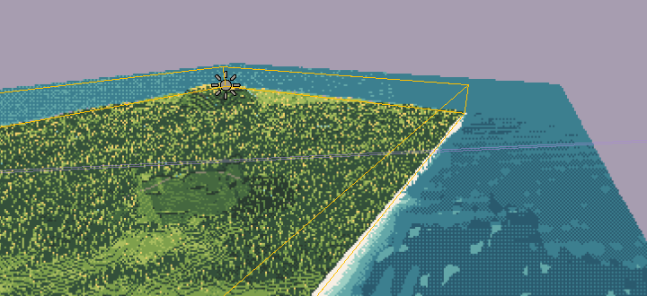
- Open the Stamp tool. Pick Valley.
- Rotate it with Z / X to run the way you want, and stamp. Stamp again end-to-end to lengthen it.
- Press 1, Brush Mode → Raise / Lower, small Size (about 5).
- Hold RMB and trace along the bottom of the trough to carve the river channel.
- Paint it later on the Painting page.
- On a hex terrain (e.g.
demo/hex_island.tscn): press 3 for Smooth, set Smooth Mode → Terraced, and brush over a slope — it keeps flat cell steps. - On any terrain: press 2 for Level, Falloff off. Drag a big patch at Height 2.
- Drag a smaller patch inside it at Height 4, then smaller again at Height 6 — stacked shelves.
- Build a cliff first (see Cliff / plateau).
- Press 4 for Bridge. Set the ramp's width with Shift+wheel.
- LMB-drag from the low ground up to the top of the cliff and let go.
- Undo and try a different Ease Value (1 for a straight ramp, 2 to ease in).
- Open the Stamp tool and pick Crater.
- Size it with Shift+wheel (or LMB-drag from the centre).
- LMB to stamp a rim and pit.
- For a deeper pit, stamp again with a negative Height (Ctrl+wheel down). Tick Limits and set Floor to cap the depth.
Erosion: weathering the whole landscape
Hand-sculpting every gully is slow. Erosion simulates rain running down your terrain: it rounds ridges, cuts gullies and piles sediment at the bottom of slopes. It isn't a toolbar tool — it's a separate child node called MarchingSquaresErosion that you add under the terrain.
Roblox's Erode is a brush that wears terrain where you paint. MST's Erosion works on the whole assigned terrain at once — more like running a "weather it" generator. For local erosion, use Raise / Lower RMB or Smooth.
Add and set it up
- Block out sharp features first — stamped mesas and mountains read best.
- In the Scene dock, select
MarchingSquaresTerrain. - Click the + (Add Child Node) at the dock's top left, type
Erosion, pick MarchingSquaresErosion, click Create.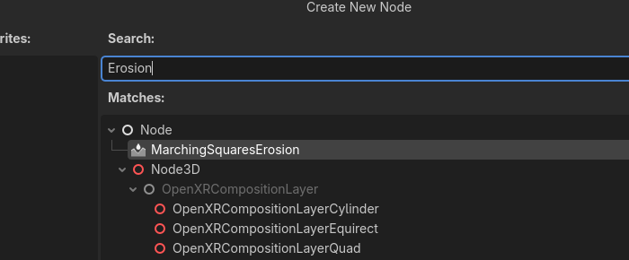
Finding the node in the Create New Node dialog. - It appears indented under the terrain with a yellow ⚠ warning: "Assign the Terrain to erode: without one, Erode does nothing."
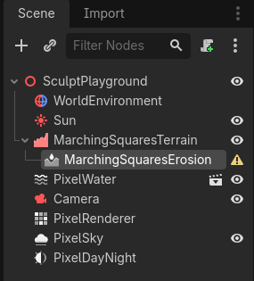
The Erosion node as a child of the terrain, warning until a terrain is assigned. - In the Inspector, next to Terrain click Assign… and pick the parent
MarchingSquaresTerrain. The warning clears. - Leave the defaults, or raise Droplets for a heavier pass.
- Press Erode (in the Inspector, or the Erode button on the bottom strip while the node is selected). It runs in the background — the editor stays usable — and lands in a couple of seconds for 30 000 droplets.
- Not happy? Ctrl+Z undoes the whole erosion in one step ("terrain erosion"). Press Erode again for a different pass.
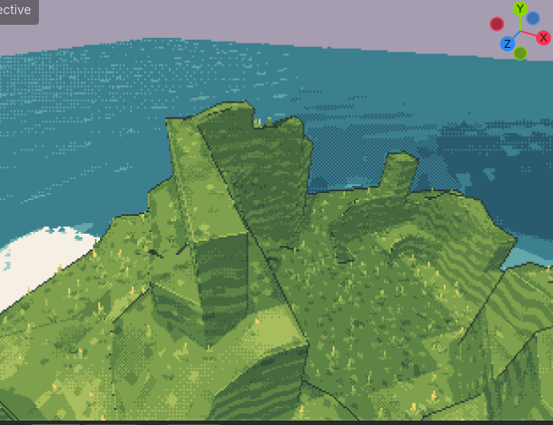

Erosion settings
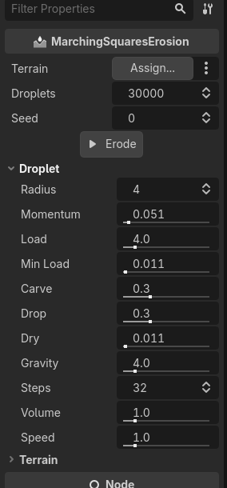
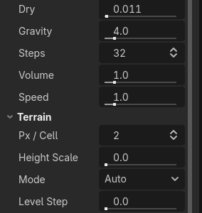
Terrain
The terrain to weather. Required — without it Erode only prints a warning.
Droplets
How many rain droplets to simulate. More = heavier weathering, slower.
- Range
- 100 – 500 000+, step 100
- Default
- 30 000
Seed
Random seed. Goes up by 1 after every Erode, so each press is a different pass. Reset it if you need an exact repeat.
- Default
- 0
Erode
Runs the simulation on a background thread; you can't start a second run until it finishes. One undo step.
Radius
Splash / deposit disk radius (pixels).
- Range
- 2 – 8
- Default
- 4
Momentum
How strongly a droplet keeps its direction.
- Range
- 0 – 1
- Default
- 0.051
Load
Max sediment a droplet can carry.
- Range
- 0 – 32+
- Default
- 4.0
Min Load
Minimum carry before it drops sediment.
- Range
- 0 – 1
- Default
- 0.011
Carve
How fast droplets erode / pick up material.
- Range
- 0 – 1
- Default
- 0.3
Drop
How fast droplets deposit material.
- Range
- 0 – 1
- Default
- 0.3
Dry
Evaporation per step (shorter droplet life).
- Range
- 0 – 1
- Default
- 0.011
Gravity
Downhill acceleration.
- Range
- 0 – 32+
- Default
- 4.0
Steps
Max steps a droplet travels before it dies.
- Range
- 1 – 256
- Default
- 32
Volume
Starting water volume.
- Range
- 0 – 8
- Default
- 1.0
Speed
Starting speed.
- Range
- 0 – 8
- Default
- 1.0
Px / Cell
Simulation resolution per terrain cell. Higher = finer detail, slower.
- Range
- 1 – 8
- Default
- 2
Height Scale
0 = pick automatically from the terrain.
- Range
- 0 – 256+
- Default
- 0.0
Mode
Auto follows the grid (terraced on cell grids, smooth otherwise); Raw = smooth heights; Terraced = snap to terrace steps.
- Values
- Auto, Raw, Terraced
- Default
- Auto
Level Step
Terrace step size; 0 = use the terrain's own.
- Range
- 0 – 16+
- Default
- 0.0
Min Plateau
Smallest flat run kept as a plateau (stops tiny steps).
- Range
- 0 – 64+
- Default
- 4
Erosion weathers the entire assigned terrain — there's no region box. High Droplets plus high Px / Cell takes longer.
For a progress bar in your own tools, the node sends erosion_progress(progress) while running and erosion_finished(applied) when done.
Undo and redo
Every stroke is one undo step: Ctrl+Z undoes it, Ctrl+Shift+Z redoes it. Two strokes take two undos (newest first). A stamp, paste or erosion is also a single step, and undo still works after switching tools. Each step has a readable name in the History dock (next to FileSystem):
| terrain raise/lower | Brush, Raise / Lower |
| terrain height draw | Brush, Drag |
| terrain level | Level |
| terrain smooth | Smooth |
| terrain bridge | Bridge |
| terrain stamp | Stamp |
| terrain gradient | Gradient |
| terrain paste | Select paste |
| terrain tint paint | Tint |
| terrain erosion | Erosion |
Same keys as Studio's Undo / Redo, and the History dock is like Studio's undo history — click a line to jump back to it.
Check yourself
The toolbar has disappeared. How do you get it back?
Click MarchingSquaresTerrain in the Scene dock. The toolbar only shows while a terrain node is selected.
You want a flat-topped plateau at exactly height 6 with sharp edges. Which tool and settings?
Level (key 2), Height 6, Falloff off, then drag. Or Brush → Drag with Flatten on.
Ctrl+wheel does nothing on Level. Is it broken?
No — Level has no Strength. Ctrl+wheel works on Raise / Lower, Smooth and Gradient (and changes Height on Stamp).
You pressed Erode and nothing happened, and the node shows a ⚠. Why?
No terrain is assigned. In the Inspector click Assign… next to Terrain and pick the terrain.
Related pages
- Your first world (quick start) — the short version of this page.
- Painting, textures & tint — Paint, Tint and texture slots (Quick Paint).
- Foliage, grass & flowers — the Foliage tool (key 5).
- Chunks, settings & saving — Chunks, Settings and grid types.
- Shortcuts & Roblox→Godot glossary.
- Troubleshooting & FAQ.